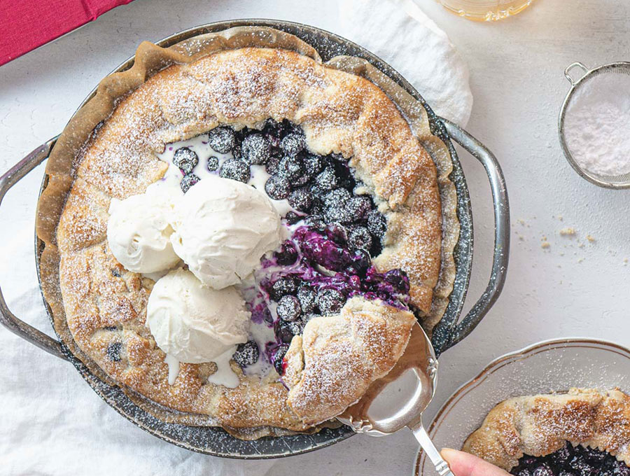

Quick & Easy Vegan Blueberry Galette

Make the most of blueberries whilst they’re at their sweetest and juiciest this summer with this fuss-free vegan blueberry galette.
This vegan blueberry galette with plant-based vanilla ice cream on top is so easy and delicious you’ll want to eat it all in one go, and then make another one straight away. Its base, our well-tested vegan shortcrust pastry, is quick and simple to make. It has no butter, no eggs, and it tastes divine! It is really true that the simplest things in life are the best!
Ingredients
- 500 g blueberries
- 3 Tbsp agave syrup
- 600 g all purpose flour
- 250 g sugar
- 100 g sunflower oil
- 40 g olive oil
- 125 ml cold water
- 2 tsp vanilla extract
- 12 g baking powder
- 1 lemon, zest and juice
- pinch of salt
To serve
- 500 g tub of vegan vanilla ice cream
Steps
- In a bowl, add the blueberries, agave syrup, juice and grated zest of half a lemon and mix gently. Set aside.
- In a bowl, add the zest of half a lemon, vanilla extract, sunflower oil, olive oil, water, salt, sugar, and stir well.
- Add the flour and baking powder all at once and start incorporating everything together with a spatula until you get a firm dough. Depending on temperature and humidity of where you are, you might need to add some extra flour to get to the right consistency.
- When the dough comes together, move it onto a floured work table and give it a quick knead with your hands of max 1 minute. Be quick as the warmth of your hands will make the dough very soft.
- Put the pastry dough into a bowl, cover it with a plate, and let it rest in the freezer for 15 minutes. This will make it easier for you to roll the dough.
- Flour a work table, then with a rolling pin start rolling the dough into discs until 4mm (1/6 of an inch) thin. If too sticky, dust it with flour while rolling it.
- Transfer the pastry discs to your baking vessel. You can use: 1) A pie dish or cast iron pan –> In this case, prepare a disk of parchment paper to cover the base of the pie dish or pan before transferring the rolled pastry into it. 2) A baking tray –> In this case, line the baking tray with parchment paper before transferring the rolled pastry discs onto it. You can fit more than one galette on a baking tray, depending on their size. Tip: to move large discs of pastry, roll it over your rolling pin, then gently roll it out onto your baking dish.
- Now you can fill the galette with a generous amount of blueberries. Also, at this point preheat the oven at 190˚C / 374˚F.
- Fold in the edges of the pastry do towards the centre of the galette. Cut off pastry that is in excess. Then try to tighten up the edges well by pinching the dough together with your fingers. This will prevent the juices from running out.
- To get a beautiful caramelised colour and flavour, dust the blueberries with sugar. Also, brush the edge of the galette with some agave syrup. You’ll get a beautiful golden colour once baked.
- Bake the galette at 190˚C/375˚F for about 40 minutes, or until you get a rich golden colour.
- Let cool down before serving with some powdered sugar and vegan vanilla ice cream on top.